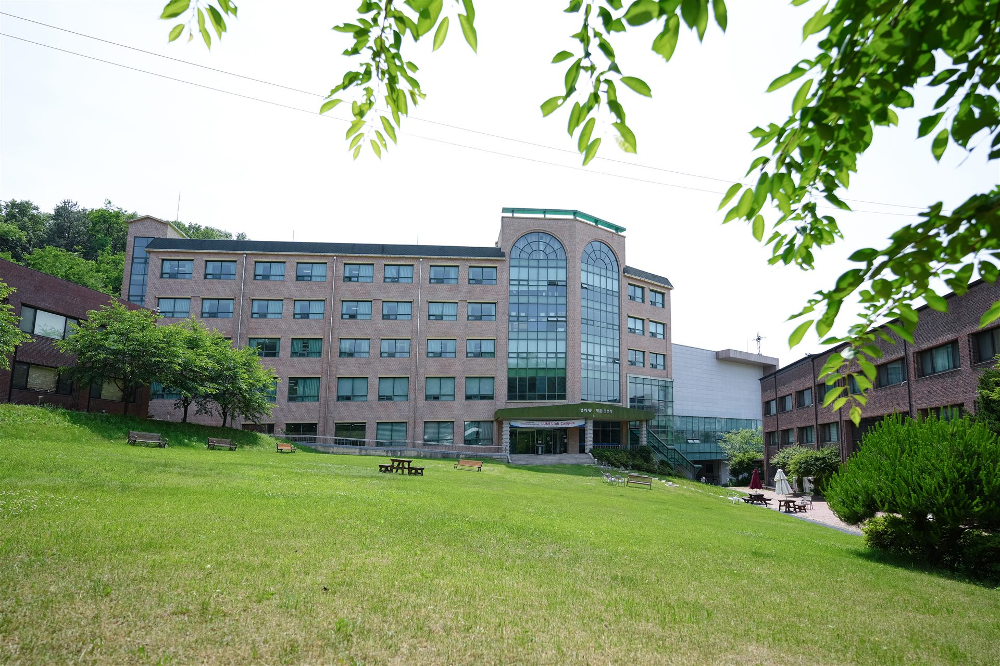

한 사람의 가치를 소중히 여기는 마음으로, 루터대학교가 여러분의 한국 유학을 함께합니다.
루터대학교 국제교육원은 외국인 학생들의 한국어 교육과 대학생활 적응을 돕고, 대학의 글로벌 역량을 강화하기 위해 설립되었습니다.
본 원은 체계적인 한국어 어학연수 과정을 시작으로, 유학생들이 낯선 한국 환경에서도 안심하고 학업에 몰입할 수 있도록 다각적인 지원체계를 구축하고 있습니다.
향후 어학연수 과정의 안정적인 운영을 바탕으로 지원 역량을 지속적으로 강화하는 한편, 학부 및 대학원 학위 과정과 연계된 전문 유학생 교육 시스템으로 그 역할을 단계적으로 확대해 나갈 것입니다.
외국인 학생들이 한국에서 학업과 대학생활을 성공적으로 이어갈 수 있도록 교육과 생활 전반을 세심하게 돌보며, 대학과 학생이 함께 성장하는 글로벌 교육 환경을 만들어 가겠습니다.
루터대학교 국제교육원장

경기도 용인, 서울과 가까운 대학입니다. 수인분당선 상갈역에서 도보로 약 10분 거리이며, 서울 주요 지역과 연결되는 대중교통과 캠퍼스 주변 생활 편의시설을 두루 이용할 수 있습니다.
소수정예 한국어 수업과 학업·생활 상담, 외국인 유학생 적응 지원, 대학 진학 및 진로 상담까지 — 혼자 한국에 와도 혼자가 아닙니다.
입국 준비부터 학교생활, 생활 적응, 대학 진학까지 한국에서의 새로운 시작을 단계별로 지원합니다.
입국 준비 → 학교생활 → 생활 적응 → 대학 진학
기독교한국루터회가 설립한 루터대학교는 배움과 돌봄을 바탕으로 학생의 성장을 지원합니다.
배움 · 돌봄 · 성장
경기도 용인시 기흥구 금화로 82번길 20 루터대학교 국제교육원
수인분당선 상갈역에서 도보 약 10분
강남역 등 서울 주요 도심 직통 운행 (약 40분 소요)
※ 대중교통 소요시간은 교통 상황에 따라 달라질 수 있습니다.
집중 학습 및 정보 활용
자유롭고 쾌적한 학습 공간
쾌적한 캠퍼스 식사 공간
루터대학교는 여러분의 성공을 응원합니다!